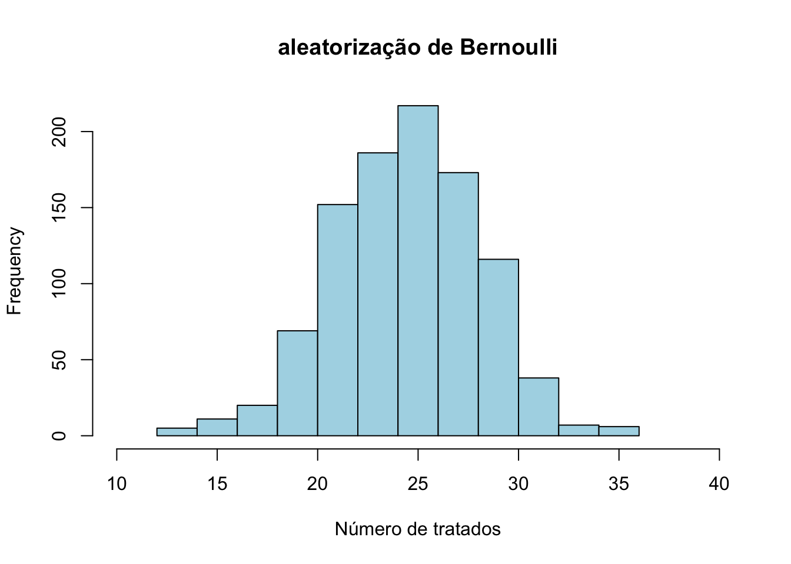

Capítulo 4 Experimentos
4.1 Introdução
- Um experimento é o desenho de pesquisa no qual a pesquisadora controla o mecanismo de atribuição do tratamento e controle
- Seja \(p_i = P(T_i=1)\). Então \(p_i\) é conhecido e controlado pela pesquisadora.
- Em contraposição, um estudo observacional é quando a pesquisadora não controla o mecanismo (natureza ou realidade social)
- Quando uma quantidade potencial (estimando) pode ser descrita em função da distribuição de dados observáveis, dizemos que o estimando é identificável. De outro modo, não identificado.
- Veremos porque experimentos produzem desenhos críveis de identificação causal
- Vamos supor experimentos ideais (sem attrition ou non-compliance)
Nós já vimos que uma suposição crítica é a SUTVA.
Stable Unit Treatment Values Assumption
Não interferência e sem varição escondida no tratamento
- PO não varia com o tratamento atribuiído a outra unidades
- PO de uma unidade não é impactado pelo nível de tratamento de outras unidades
Para cada unidade, não há formas distintas ou versões de cada nível de tratamento
Definição não-ambígua do tratamento
Supondo SUTVA, Diferença Simples de Média pode ser decomposta em ATE + viés de seleção
\(\underbrace{\mathbb{E}[Y_i|T_i=1] - \mathbb{E}[Y_i|T_i=0]}_{\text{Simple Difference in Outcomes (SDO)}} = \mathbb{E}[Y_i^1|T_i=1] - \mathbb{E}[Y_i^0|T_i=0]\)
Podemos adicionar e subtrair os resultados contrafactuais para os tratados
\(= \mathbb{E}[Y_i^1|T_i=1] - \color{blue}{\mathbb{E}[Y_i^0|T_i=1]} + \color{red}{\mathbb{E}[Y_i^0|T_i=1]} - \mathbb{E}[Y_i^0|T_i=0]\)
\(= \underbrace{\mathbb{E}[Y_i^1 - Y_i^0|T_i=1]}_{\text{ATT}} + \underbrace{\mathbb{E}[Y_i^0|T_i=1] - \mathbb{E}[Y_i^0|T_i=0]}_{\text{Viés de Seleção}}\)
4.2 Experimentos aleatórios
- Mecanismo de atribuição de tratamento é probabilístico (Positividade): \(0 < p_i < 1\).
- Unconfoundedness ou Permutabilidade (ou assignment mechanism–ignorability): \(P(T_i=1|y^1, y^0) = P(T_i)\).
O que é Permutabilidade (uncounfoudedness)?
A distribuição dos resultados potenciais é independente do tratamento.
\(\mathbb{E}[Y^1|T=1] = \mathbb{E}[Y^1|T=0]\)
\(\mathbb{E}[Y^0|T=1] = \mathbb{E}[Y^0|T=0]\)
Resultados potenciais são independentes do tratamento, dadas as covariáveis.
Se a condição de tratamento fosse hipoteticamente trocada, os resultados esperados permaneceriam os mesmos.
Isso significa que em um experimento com permutabilidade, não temos viés de seleção (Por quê?).
Independência entre tratamento e resultados potenciais implica que \(\mathbb{E}[Y^0_i|T_i=1] = \mathbb{E}[Y^0_i|T_i=0] = \mathbb{E}[Y^0_i]\)
Portanto, o viés de seleção, dado por \(\mathbb{E}[Y_i^0|T_i=1] - \mathbb{E}[Y_i^0|T_i=0]\), fica:
\(\mathbb{E}[Y_i^0|T_i=1] - \mathbb{E}[Y_i^0|T_i=0] = \mathbb{E}[Y_i^0] - \mathbb{E}[Y_i^0] = 0\)
Ou seja, SDO estima o ATE (via ATT).
\(\underbrace{\mathbb{E}[Y_i|T_i=1] - \mathbb{E}[Y_i|T_i=0]}_{\text{Simple Difference in Outcomes (SDO)}} = \underbrace{\mathbb{E}[Y_i^1 - Y_i^0|T_i=1]}_{\text{ATT}} = ATE\)
4.3 Restrição de Exclusão
Formalmente, podemos separar a alocação do tratamento e o tratamento efetivamente recebido. Seja \(Z_i\) a alocação do tratamento e \(T_i\) o tratamento recebido.
Então, a restrição de exclusão quer dizer que o que importa é o tratamento efetivamente recebido \(T_i\), e não a variável que aloca o tratamento \(Z_i\).
Formalmente, isso quer dizer que: \(Y^{1,z=1, T}_i = Y^{1,z=0, T}_i = Y^{1,T}_i\) e similarmente, \(Y^{0,z=0,T}_i = Y^{0,z=0,T}_i = Y^{0,T}_i\)
Quando não ocorre isso? Se o mecanismo de atribuição do tratamento dispara outras causas
Suponha que um experimento é sobre efeito de transferência de dinheiro em bem-estar
Se ongs, sabendo do experimento, forem ajudar quem não tiver sido alocado para receber dinheiro
Se houver erro de mensuração assimétrico?
Pesquisadores distintos entrevistam recipientes e não-recipientes da transferência de dinheiro, com habilidades distintas
Ou questionários diferentes. Erro de mensuração assimétrico
Nova switching equation.
Seja \(e_{i1}\) o erro de mensuração cometido se uma observação é atribuída para o tratamento, e, analogamente, \(e_{i0}\) o erro para o controle.
De \(Y_i = T_iY^1_i + (1- T_i)Y^0_i\) para \(Y_i = T_i(Y^1_i + e_{i1}) + (1- T_i))(Y^0_i + e_{i0})\).
Novo SDO: \(\mathbb{E}[Y_i|T_i=1] - \mathbb{E}[Y_i|T_i=0] = \mathbb{E}[Y^1_i + e_{i1}|T_i=1] - \mathbb{E}[Y^0_i + e_{i0}|T_i=0] = \mathbb{E}[Y^1_i|T_i=1] + \mathbb{E}[e_{i1}|T_i=1] - \mathbb{E}[Y^0_i|T_i=0] - \mathbb{E}[e_{i0}|T_i=0]\)
Novo SDO pode se rearranjado: \(\underbrace{\mathbb{E}[Y^1_i|T_i=1] - \mathbb{E}[Y^0_i|T_i=0]}_{\text{antigo SDO}} + \underbrace{\mathbb{E}[e_{i1}|T_i=1] - \mathbb{E}[e_{i0}|T_i=0]}_{\text{Dif média no erro de mensuração}}\)
Se \(\mathbb{E}[e_{i1}|T_i=1] \neq \mathbb{E}[e_{i0}|T_i=0]\), então SDO será viesado.
Como Garantir a restrição de Exclusão?
- Double blindness (duplo cego)
- Paralelismo na administração do experimento (mesmo questionário e mesmos entrevistadores)
- Na pior das hipóteses, aleatorização dos entrevistadores.
4.4 Tipos de experimentos
4.4.1 Aleatorização de Bernoulli
- É o experimento com aleatorização simples (basicamente, lançamento de moeda)
- Matematicamente, \(p_i(T_i=1) = p\).
- Problema: Possível “má aleratorização” (todo mundo no controle ou tratamento)
- ps.: toda aleatorização realizada é matematicamente equivalente.
- Possui \(2^n\) configurações possíveis de alocação entre tratamento e controle
set.seed(10)
n <- 50
hist(replicate(1000, sum(rbinom(n, 1, 0.5))),
main = "aleatorização de Bernoulli",
xlab = "Número de tratados",
col = "lightblue") + xlim(0,50)
4.4.2 Aleatorização Completa
- Seleciono aleatoriamente um número fixo de pessoas para tratamento e controle
- Ex.: 25 para tratamento e 25 para controle
- Basta numerar cada unidade (de 1 a 50) e amostrar 25 aleatoriamente para tratamento (e restante para controle)
- Vantagem: garanto número de obs em cada condição
- Possui \({N \choose \frac{n}{2}}\) configurações possíveis de alocação entre tratamento e controle.
- Intuição: estamos jogando fora as aleatorizações “indesejáveis”.
- Cálculo da variância é mais complexo
4.4.3 Aleatorização Condicional (Block Random Assigment)
Definição: Experimento é condicionalmente aleatório se a aleatorização depende de variáveis pré-tratamento \(X\).
Exemplo Binário: Duas moedas, uma para \(X=1\) e outra para \(X=0\).
Aleatorização Marginal vs. Condicional:
- Marginal: Aleatorização uniforme para todos os indivíduos.
- Condicional: Aleatorização depende de \(X\), gerando permutabilidade condicional a \(X\).
Permutabilidade Condicional: \((Y^1, Y^0 | X=x) \indep T\).
Não gera permutabilidade (não-condicional).
Permutabilidade condicional a \(X\) é crucial para inferência em contextos com variáveis pré-tratamento.
4.4.4 Pensando aleatorização em bloco
- Ex.: digamos que em um amostra de 100 pessoas, queremos 25 homens e 25 mulheres no tratamento e controle
- Sorteio 25 homens para tramento e depois 25 mulheres.
- Cada bloco possui tamanho 25, neste exemplo.
- Blocos de tamanho \(2\) são chamados de pair-matched design.
- Em geral, estudos com matching em muitas variáveis
- Útil para amostras pequenas
4.4.5 ATE com Aleatorização Condicional (Bloco)
- Estratitificação
- Efeito heterogêneo por estrato?
- Podemos calcular o ATE por estrato, já que é aleatório no interior de cada estrato.
- Efeito geral na população.
- Podemos calcular ponderando os ATEs.
- Seja \(J\) o número de estratos, indixados por \(j\). Seja \(N\) o número de unidades e \(N_j\) o número de unidades no bloco \(j\). Então:
- \(ATE = \sum_{j=1}^J \frac{N_j}{N}ATE_j\)
4.4.6 Aleatorização em bloco
– Pela Lei dos Grandes números, tende a gerar balanceamento entre blocos – Balanceamento quer dizer que blocos são similares – Em variáveis observadas e não-observadas – Probabilidade de tratamento pode variar por bloco. – Chamada de propensity score.
4.4.7 Precisão da aleatorização em bloco
- Em geral a precisão aumenta (erro padrão diminui) com aleatorização em bloco.
- Intuição é que removemos parte da variância (amostras possíveis), condicionando nos estratos
- Vamos checar uma simulação no R para ver um exemplo do ganho na precisão
- Lembrem-se que se \(X\) e \(Y\) são independentes, então \(Var(aX + bY) = a^2Var(x) + b^2Var(Y)\).
# Set up Potential outcomes and units and blocks
n1 <- 10
n2 <- 16
N <- n1+n2
J <- 2
index_block <- c(rep(2, n2), rep(1, n1))
set.seed(12)
# potential outcome control
y0 <- c(rnorm(n1, 2, 1),rnorm(n2, 6, 1))
y1 <- y0 + 1.5 # potential outcome treatment# block assignment
t_bloco1 <- sample(1:n1, n1/2)
c_bloco1 <- (1:n1)[!(1:n1 %in% t_bloco1)]
t_bloco2 <- sample((n1+1):(n1+n2), n2/2)
c_bloco2 <- ((n1+1):(n1+n2))[!((n1+1):(n1+n2) %in% t_bloco2)]
y1_obs_bloco1 <- y1[t_bloco1]
y1_obs_bloco2 <- y1[t_bloco2]
y0_obs_bloco1 <- y0[c_bloco1]
y0_obs_bloco2 <- y0[c_bloco2]# random assignment
units_simple_treatment <- c(t_bloco1, t_bloco2)
units_simple_control <- c(c_bloco1, c_bloco2)
y1_obs <- y1[units_simple_treatment]
y0_obs <- y0[units_simple_control]
# erro padrão
erro_pad_simple <- t.test(y1_obs, y0_obs)$stderr
simple_p_value <- t.test(y1_obs, y0_obs)$p.value
my_t <- mean(y1_obs - y0_obs)/erro_pad_simpleerro_pad1 <- t.test(y1_obs_bloco1, y0_obs_bloco1)$stderr
erro_pad2 <- t.test(y1_obs_bloco2, y0_obs_bloco2)$stderr
erro_padrao_geral <- sqrt(erro_pad1^2*(n1/N)^2 + erro_pad2^2*(n2/N)^2)
ate1 <- mean(y1_obs_bloco1 - y0_obs_bloco1)*(n1/N)
ate2 <- mean(y1_obs_bloco2 - y0_obs_bloco2)*(n2/N)
ate <- ate1 + ate2
my_t <- ate/erro_padrao_geral
p_value <- 2*(1 - pt(abs(my_t), df = 23.76567))
print(erro_pad1)## [1] 0.646563## [1] 0.646563## [1] 0.3723061## [1] 0.00068183144.4.8 Comparação de SEs
library(knitr)
comparison_table <- data.frame(
Method = c("Simple Randomization", "Block 1", "Block 2", "General Block Randomization"),
Standard_Error = c(erro_pad_simple, erro_pad1, erro_pad2, erro_padrao_geral)
)
knitr::kable(comparison_table, caption = "Comparação de Erros padrão", align = 'c', format = "latex")4.4.9 Cluster randomization
- Quando aleatorizo o cluster, em vez das unidades.
- Ex.: Se não for possível aleatorizar um tratamento entre estudantes, aleatorizo escolas
- No interior de cada escola, todo mundo é tratado ou não-tratado. Não há variação within escolas, apenas entre (between) escolas.
- Grande perda de variabilidade nos dados, reduzindo precisão (aumento no erro padrão)
- Às vezes é a única aleatorização possível.
4.5 Estimador ATE
- estimativa: \(\frac{\sum_{i=1}^{n}Y_iT_i}{n_1} - \frac{\sum_{i=1}^{n}Y_i(1-T_i)}{n_0} = .0608 - .0353 = 0.0255\)
- Erro padrão: \(\sqrt{\frac{\hat{\sigma_1^2}}{n_1} + \frac{\hat{\sigma_0^2}}{n_0}} = \sqrt{\frac{.0608\cdot(1-.0608)}{1217} + \frac{.0353\cdot (1-.0353)}{1217}} = 0.00865\)
- Pequena diferença com os coeficientes da tabela
- Typo? Alguma informação não reproduz exatamente? Fizemos algo errado?
treatment <- c(rep(1, 74), rep(0, 1217 - 74))
control <- c(rep(1, 43), rep(0, 1217 - 43))
var_treat <- var(treatment)
var_control <- var(control)
erro_padrao <- sqrt(var_treat/1217 + var_control/1217)
round(erro_padrao, 5)## [1] 0.00866##
## Welch Two Sample t-test
##
## data: treatment and control
## t = 2.9414, df = 2286.3, p-value = 0.0033
## alternative hypothesis: true difference in means is not equal to 0
## 95 percent confidence interval:
## 0.008490408 0.042454539
## sample estimates:
## mean of x mean of y
## 0.06080526 0.035332794.6 Key Takeways
- Experimento (sob SUTVA) elimina o viés de seleção
- Depende de restrição de exclusão e simetria
- Vários tipos de experimentos: block aumenta precisão
- Com N grande, diferença diminui
- Sempre supomos condições ideais (sem attrition, compliance perfeito etc.)
4.7 Declare Design
Uma ferramenta muito útil para experimentos (mas também para estudos observacionais) é o pacote do R Declare Design.
Blair, Coppock e Humphreys criaram um framework para definir e avaliar um desenho de pesquisa. Com oresultado, escreveram um livro “Research Design in the Social Sciences”, e um pacote no R para implementar os conceitos desenvolvidos no livro, chamado “DeclareDesign. Para instalar (junto com os datasets usados no livro), basta rodar .
O frameowrk é baseado no acrônimo MIDA, que contempla os quatro elementos básicos de um desenho de pesquisa: models, inquiries, data strategies, and answer strategies.
Ou seja, você deve especificar um modelo, qual pergunta de pesquisa (aka estimando), quais dados vai utilizar e como vai estimar o estimando.
Um modelo descreve o que causa o que e como. Tipicamente especifica a as unidades, o tamanho da amostra e a equação de resultados potenciais. Suponha que quero rodar um experimento aleatório com um tratamento e controle (two-arm randomized experiment). Assim, podemos declarar um modelo com:
library(DeclareDesign)
model <- declare_model(
N = 500,
X = rep(c(0, 1), each = N / 2), # tratamento e controle
U = rnorm(N, sd = 0.25), # heterogeneidade exógena
potential_outcomes(Y ~ 0.2 * Z + X + U)
)Vamos entender o que fizemos.
Declaramos que nossa população terá \(500\) observações: . Nesse exemplo, a amostra será igual a populacão, mas poderíamos amostrar da população se quiséssemos.
Declaramos que \(X\), uma covariável, pode assumir dois valores (0,1), e atribuimos a priemria metade pra \(0\) e a outra metade para \(1\): .
Declaramos que existe uma variável \(U\) que tem distribuição normal, com \(N\) observações e média \(0\) e desvio-padrão \(.25\):.
Declaramos que os resultados potenciais diferem em \(20\%\) entre tratamento e controle (\(Z\)) para cada unidade. Uma forma alternativa e talvez mais clara de declarar a relação entre tratamento/controle e resultados potenciais seria escrever .
4.1. Além disso, \(X\) tem efeito de \(1\) para todas as unidades.
Vamos passar agora ao nosso estimando ou inquiry.
Se estamos interessados no ATE, é só declarar que é a média da diferença entre os resultados potenciais. Podemos também usar a função Outras possibilidaes incluem o ATT e CATE: , por exemplo. Formulação equivalente para o ATT seria .
Estratégia de dados
data <- declare_assignment(Z = complete_ra(N = N, m = 250)) + # assigment mechanism
declare_measurement(Y = reveal_outcomes(Y ~ Z)) # reveal_outcomes é a switching equationtwo_arm_trial <- model +
inquiry +
data +
estimator
# Draw a simulated dataset
head(draw_data(two_arm_trial), 10)## ID X U Y_Z_0 Y_Z_1 Z Y
## 1 001 0 0.013136040 0.013136040 0.21313604 1 0.213136040
## 2 002 0 0.306059991 0.306059991 0.50605999 0 0.306059991
## 3 003 0 0.248393137 0.248393137 0.44839314 1 0.448393137
## 4 004 0 0.037319115 0.037319115 0.23731912 0 0.037319115
## 5 005 0 0.352668514 0.352668514 0.55266851 0 0.352668514
## 6 006 0 0.364146534 0.364146534 0.56414653 1 0.564146534
## 7 007 0 0.366437409 0.366437409 0.56643741 1 0.566437409
## 8 008 0 -0.280273943 -0.280273943 -0.08027394 1 -0.080273943
## 9 009 0 -0.007617163 -0.007617163 0.19238284 0 -0.007617163
## 10 010 0 0.195182802 0.195182802 0.39518280 1 0.395182802Após declarar um desenho de pesquisa, podemos diagnosticar se nosso desenho de pesquisa pode ser respondido adequadamente (isto é, se é identificável, se possui poder para estimar com precisão o efeito de interesse etc.). Podemos inclusive modificar o desenho para responder a outras perguntas (é generalizável para outras populações, diferentes estimadores pdesempenham melhor etc.)
Eis um exemplo de diagnóstico:
##
## Research design diagnosis based on 100 simulations. Diagnosis completed in 1 secs. Diagnosand estimates with bootstrapped standard errors in parentheses (100 replicates).
##
## Design Inquiry Estimator Outcome Term N Sims Mean Estimand Mean Estimate Bias SD Estimate RMSE Power Coverage
## two_arm_trial ATE estimator Y Z 100 0.20 0.20 0.00 0.05 0.05 0.99 0.95
## (0.00) (0.00) (0.00) (0.00) (0.00) (0.01) (0.02)Podemos ajustar o desenh ode pesquisa
##
## Research design diagnosis based on 500 simulations. Diagnosis completed in 8 secs. Diagnosand estimates with bootstrapped standard errors in parentheses (100 replicates).
##
## Design N Inquiry Estimator Outcome Term N Sims Mean Estimand Mean Estimate Bias SD Estimate RMSE Power Coverage
## design_1 100 ATE estimator Y Z 500 0.20 0.20 -0.00 0.05 0.05 0.97 0.94
## (0.00) (0.00) (0.00) (0.00) (0.00) (0.01) (0.01)
## design_2 200 ATE estimator Y Z 500 0.20 0.20 0.00 0.05 0.05 0.98 0.95
## (0.00) (0.00) (0.00) (0.00) (0.00) (0.01) (0.01)
## design_3 300 ATE estimator Y Z 500 0.20 0.20 -0.00 0.05 0.05 0.97 0.95
## (0.00) (0.00) (0.00) (0.00) (0.00) (0.01) (0.01)
## design_4 400 ATE estimator Y Z 500 0.20 0.20 -0.00 0.05 0.05 0.98 0.95
## (0.00) (0.00) (0.00) (0.00) (0.00) (0.01) (0.01)
## design_5 500 ATE estimator Y Z 500 0.20 0.20 -0.00 0.05 0.05 0.98 0.96
## (0.00) (0.00) (0.00) (0.00) (0.00) (0.01) (0.01)4.8 Exercício
O exercício abaixo é uma tradução de questões que estavam presentes no exame de qualificação (prelims) da área de métodos do programa de doutorado em ciência política de Yale.
4.8.1 Experimento com envio de cartões-postais e participação eleitoral
Você conduz um experimento aleatório para testar o efeito de um cartão-postal sobre a participação eleitoral, sorteando independentemente uma moeda para cada sujeito com probabilidade \(0 < p < 1\) de receber o tratamento. Assuma o pressuposto de SUTVA (Stable Unit Treatment Value Assumption). Você estima o seguinte modelo por Mínimos Quadrados Ordinários (OLS):
\[ Y_i = \beta_0 + \beta_1 T_i + \beta_2 S_i + \beta_3 T_i S_i + u_i \]
em que: - \(Y_i\) indica se o indivíduo votou (variável dependente); - \(T_i\) é o indicador binário de tratamento (receber ou não o cartão-postal); - \(S_i\) é um indicador binário que vale 1 se o indivíduo vive em um estado eleitoralmente competitivo (battleground state) e 0 caso contrário; - \(T_i S_i\) é a interação entre o tratamento e o contexto competitivo.
4.8.1.1 (a) Interprete os quatro coeficientes \(\beta\)
- \(\beta_0\): média de \(Y_i\) (taxa de votação) para o grupo controle (\(T_i = 0\)) em estados não competitivos (\(S_i = 0\)).
- \(\beta_1\): efeito médio do tratamento (cartão-postal) em estados não competitivos. Como o tratamento foi atribuído aleatoriamente, \(\beta_1\) tem interpretação causal.
- \(\beta_2\): diferença na taxa média de votação entre estados competitivos e não competitivos no grupo controle. Não tem interpretação causal.
- \(\beta_3\): diferença no efeito do tratamento entre estados competitivos e não competitivos. Se \(\beta_3 \neq 0\), o efeito do cartão-postal depende do tipo de estado. Como o tratamento é aleatório, \(\beta_3\) também tem interpretação causal.
4.8.2 Experimento com anúncios de TV e participação eleitoral
Você quer testar se anúncios de TV aumentam a participação eleitoral. O experimento pode ser conduzido em até 16 mercados de mídia, dos quais até 8 podem ser sorteados para o grupo de tratamento. Os anúncios só podem ser exibidos para o mercado de mídia como um todo.
Você tem informações individuais para todos os eleitores elegíveis nesses mercados: mercado de mídia, idade, sexo, raça/etnia e participação nas duas eleições anteriores. Após a eleição, você receberá os dados atualizados sobre participação no pleito atual.
4.8.2.1 (a) Como alocar aleatoriamente os mercados ao tratamento?
Sorteie aleatoriamente 8 dos 16 mercados de mídia para o grupo de tratamento. Como o tratamento é atribuído no nível do mercado, essa é a unidade de aleatorização. Recomenda-se balancear o sorteio usando pareamento ou estratificação com base em características agregadas dos mercados (por exemplo, participação passada, composição demográfica), se houver variação relevante entre eles.
4.8.2.2 (b) Como analisar esse experimento?
A análise deve ser feita no nível do mercado de mídia, que é a unidade de tratamento. Uma abordagem válida é calcular a média da taxa de votação em cada mercado e rodar uma regressão simples:
\[ \bar{Y}_j = \alpha + \tau D_j + \varepsilon_j \]
em que: - \(\bar{Y}_j\) é a média da taxa de votação no mercado \(j\); - \(D_j\) é um indicador de tratamento para o mercado; - \(\tau\) estima o efeito médio do tratamento.
É possível incluir covariáveis no nível do mercado para aumentar a precisão, mas não é necessário para validade causal.
4.8.3 Exclusão de participantes em experimentos de survey
Pesquisadores às vezes excluem participantes de um experimento de survey por: 1. Não passarem em uma checagem de atenção pré-tratamento; 2. Não passarem em uma checagem de atenção pós-tratamento; 3. Completarem o survey muito rapidamente (por exemplo, 3 desvios-padrão abaixo da média de tempo).
4.8.3.1 (a) Se o interesse é no efeito médio do tratamento entre os sujeitos que não foram excluídos, qual dessas estratégias é não-viesada?
Todas essas estratégias podem fornecer estimativas não viesadas para o efeito médio do tratamento entre os sujeitos que permanecem na amostra, desde que os critérios de exclusão sejam pré-tratamento ou não afetem diferencialmente os grupos de tratamento e controle. A exclusão baseada em variáveis observadas antes do tratamento (como checagem pré-tratamento ou tempo de resposta) é menos problemática.
Já a exclusão com base em comportamentos após o tratamento (como falha em atenção pós-tratamento) pode introduzir viés, pois pode estar correlacionada com a resposta ao tratamento.
4.8.3.2 (b) Se o interesse é no efeito médio do tratamento entre todos os participantes que iniciaram o experimento, qual dessas estratégias é não-viesada?
Nenhuma das exclusões garante uma estimativa não viesada nesse caso. Excluir participantes com base em qualquer critério — mesmo que relacionado à atenção ou tempo de resposta — altera a composição da amostra em relação ao universo original. Para estimar o efeito médio para todos os participantes que começaram o experimento, é necessário manter todos os sujeitos, independentemente do desempenho em checagens ou tempo de resposta.